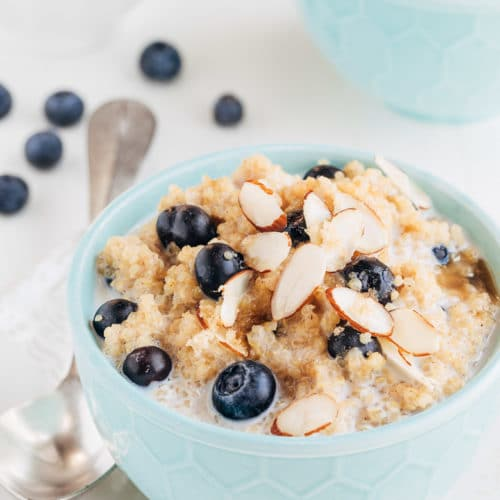

Blueberry Breakfast Quinoa

Description
Sweet blueberries and tart lemon pair well in this alternative to oatmeal. High in protein and fiber, quinoa is a great start to your day! I made this up one morning when I had a craving for quinoa and was looking for a change from the usual. Top with extra milk for a thinner consistency. Also good with a sprinkle of cinnamon or nutmeg.
Ingredients
- 1 cup quinoa
- 2 cups nonfat milk
- 1 pinch of salt
- 3 tablespoons maple syrup
- 1/2 lemon zest
- 1 cup blueberries
- 2 teaspoons flax seed
Steps
- Rinse quinoa in a fine strainer with cold water to remove bitterness until water runs clear and is no longer frothy.
- Heat milk in a saucepan over medium heat until warm, 2 to 3 minutes. Stir quinoa and salt into the milk; simmer over medium-low heat until much of the liquid has been absorbed, about 20 minutes. Remove saucepan from heat. Stir maple syrup and lemon zest into the quinoa mixture. Gently fold blueberries into the mixture.
- Divide quinoa mixture between 2 bowls; top each with 1 teaspoon flax seed to serve.